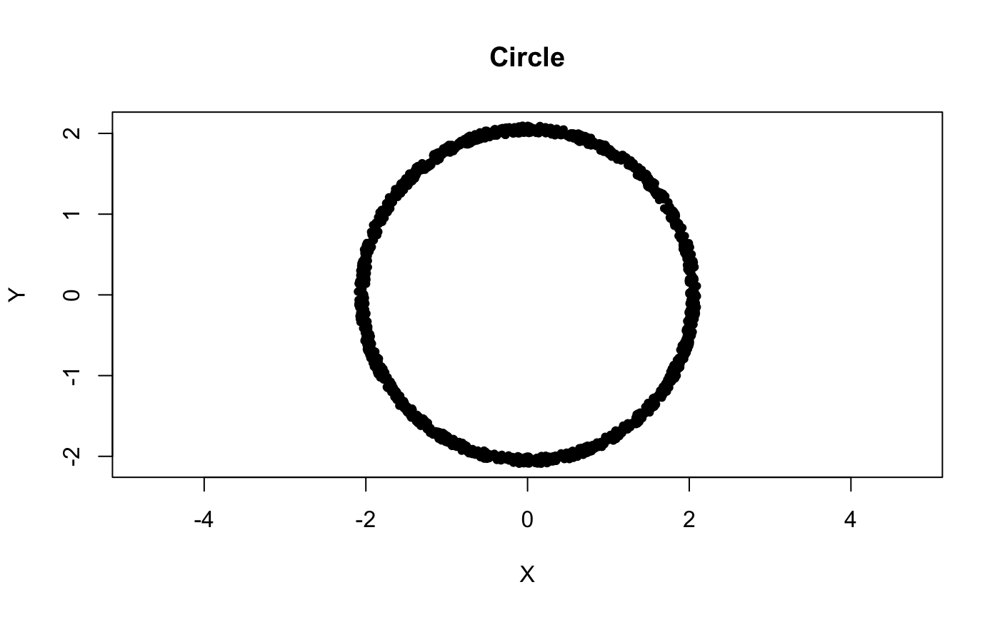

Using the Mapper Package
Matt Piekenbrock
Mapper.RmdThis document contains a quick overview of how to use the interface in the Mapper package to fully customize the mapper construction. The focus on this document is on package functionality and usage, as opposed the theory the Mapper framework was founded on, and as such discusses Mapper from a strictly algorithmic or computational perspective.
Quickstart
Consider a noisy sampling of points along the perimeter of a circle in \(\mathbb{R}^2\)
set.seed(1234)
## Generate noisy points around the perimeter of a circle
n <- 1500
t <- 2*pi*runif(n)
r <- runif(n, min = 2, max = 2.1)
noisy_circle <- cbind(r*cos(t), r*sin(t))
## Plot the circle
plot(noisy_circle, pch = 20, asp = 1, xlab = "X", ylab = "Y", main = "Circle")
To get the mapper of this circle, first supply the data via X and the mapped values via filter_values, along with the parameters to other components such as the cover and clustering parameters. See ?mapper for more details. A summary is available with the default print method.
library("Mapper")
left_pt <- noisy_circle[which.min(noisy_circle[, 1]),]
f_x <- matrix(apply(noisy_circle, 1, function(pt) (pt - left_pt)[1]))
m <- mapper(X = noisy_circle, filter_values = f_x,
cover_params = list(typename="restrained rectangular",
number_intervals=10L, percent_overlap=50),
measure = "euclidean",
cluster_params = list(cl="single", num_bins=10L))
print(m)## Mapper with filter f: X^2 -> Z
## Configured with a Restrained Rectangular cover comprising 10 open sets
## The graph contains 18 vertices and 18 edgesBy default, the core information of the \(1\)-skeleton of the Mapper construction is returned, including:
The vertices of the graph containing the indices of the points resulting from the clustering.
An adjacency representation of the mapper graph.
A list mapping cover indices to vertex ids
This is, in essence, all the central information one needs to conduct a more in-depth analysis of the mapper.
Interactively building the Mapper
For most use-cases, the static method above is sufficient for getting a compact Mapper construction back. However, building the ‘right’ Mapper is usually an interactive process that requires parameter tuning, e.g. trying alternative filter functions, tweaking clustering parameters, exploring different covering strategies, etc. For large data sets, employing this iterative fitting process with the above method can be prohibitively expensive.
To help facilitate this process, the Mapper package uses R6 class generators to decompose the components used to build the mapper. A few of the benefits R6 classes include full encapsulation support, reference semantics for member fields, easy-to-employ parameter checking via active bindings, and modularity via method chaining. More details available at Hadleys Advanced R series or the R6 documentation site.
To demonstrate some of these benefits, consider a simplified interpretation of the Mapper pipeline:
“Filter” the data via a reference map
Equip the filter space with a cover
Construct the k-skeleton
These steps are demonstrated below using the noisy_circle data set below.
Below is an example of a very simple filter that calculates distance from every points first coordinate to the point with left-most coordinate, \(p\), i.e.
## 1. Specify a filter function for the data
left_pt <- noisy_circle[which.min(noisy_circle[, 1]),]
f_x <- matrix(apply(noisy_circle, 1, function(pt) (pt - left_pt)[1]))Coloring the points on a rainbow gradient based on their distance values sheds light on what the filter geometrically represents
## Bin the data onto a sufficiently high-resolution rainbow gradient from blue (low) to red (high)
rbw_pal <- rev(rainbow(100, start = 0, end = 4/6))
binned_idx <- cut(f_x, breaks = 100, labels = F)
plot(noisy_circle, pch = 20, asp = 1, col = rbw_pal[binned_idx], xlab = "X", ylab = "Y", main = "Circle")
To begin building a mapper object more fluidly, one starts by using the MapperRef R6 class generator. It accepts as its only argument the data matrix, which is stored as read-only field.
Building the cover
Once the filter has been applied, a cover must be chosen to discretize the space. Here, a simple rectangular cover with fixed centers is used.
The only required argument is the filter point values themselves; cover-specific parameters may optionally be supplied at initialization, or set via the assignment operator.
If you supply a single value when the filter dimensionality \(> 1\), the argument is recycled across the dimensions. The cover summary can be printed as follows:
## Cover: (typename = Fixed Rectangular, number intervals = [5], percent overlap = [20]%)Once parameterized, the cover may be explicitly constructed via the construct_cover member, before sending to Mapper. The construct_cover function uses the given set of parameters to populate the intersection between the open sets in the cover and the given filter data.
Mapper accepts any cover that derives from the abstract CoverRef R6 class. To see a list of the covers_available method.
## Print the typename/identifer, the R6 generator, and the parameter names
Mapper::covers_available()## Typename: Generator: Parameters:
## fixed rectangular FixedRectangularCover number_intervals, percent_overlap
## restrained rectangular RestrainedRectangularCover number_intervals, percent_overlap
## adaptive AdaptiveCover number_intervals, percent_overlap, quantile_method
## ball BallCover epsilonIf you want to use a cover outside of the ones offers by the package, feel free to derive a new type cover class (and consider submitting a pull request!).
Building the 0-skeleton
The final step to create a Mapper is to construct the k-skeleton, which requires a different set of procedures, based on k. Since the definition of a k-skeleton is inductive, the \(0\)-skeleton is constructed first. This amounts to applying a partial clustering over data intersecting the preimages of the sets comprising the cover. The choice of clustering algorithm, metric, hyper-parameters, etc. is completely customizable–the only requirement is that the [clustering] function take as input at least the data X and a vector of indices idx\(\subset \{1, 2, \dots, n\}\) and return an integer vector giving a partitioning on that subset.
An example of how one might construct a custom clustering function using the parallelDist and fastcluster packages is given below, wherein the single linkage criterion is used to build a cluster hierarchy, and then a histogram-based heuristic similar the idea discussed in Section 3.1 of the original Mapper paper is used to set the cut value.
custom_clustering_f <- function(){
dependencies_met <- sapply(c("parallelDist", "fastcluster"), requireNamespace)
stopifnot(all(dependencies_met))
return(function(X, idx) {
dist_x <- parallelDist::parallelDist(X[idx,], method = "euclidean")
hcl <- fastcluster::hclust(dist_x, method = "single")
cutoff_first_bin(hcl, num_bins = 10L)
})
}
m$clustering_algorithm <- custom_clustering_f()The clustering function in this example was created as a closure. This can be useful to e.g. store auxiliary parameters option needed by the algorithm, check for package dependencies (like above), cache precomputed information, etc. Since closures capture their enclosing environments, which is a common cause of a form of memory leaking, they must be used with caution.
If the clustering function depends on internal components of the MapperRef class instance, the function will error when it is first called. Consider the exact same code as above, but this time parameterized by a field of the MapperRef instance.
m$measure <- "euclidean"
custom_clustering_f <- function(){
...
dist_x <- parallelDist::parallelDist(X[idx,], method = self$measure)
...
}This will return an evaluation error upon executing, both from the user side and internally.
m$clustering_algorithm(X = noisy_circle, idx = 1:10)
## Error in pmatch(method, METHODS) : object 'self' not found The search path of the execution environment of the closure doesn’t traverse the binding environment of either the self or private environments associated with the instance. If access to these environments is needed, pass the clustering function via the cl argument of the use_clustering_algorithm member.
custom_clustering_f <- function(linkage="single", nbins = 10L){
return(function(X, idx) {
dist_x <- parallelDist::parallelDist(X[idx,], method = self$measure)
hcl <- fastcluster::hclust(dist_x, method = linkage)
cutoff_first_bin(hcl, num_bins = nbins)
})
}
m$use_clustering_algorithm(cl = custom_clustering_f())This effectively allows the user to use any clustering algorithm they wish, even algorithms that depend on the internal parameters of the mapper itself.
Alternatively, for people do not have much experience in clustering, the cl argument to use_clustering_algorithm can also be one of the widely-supported linkage criteria and distance measures used in hierarchical clustering, to which a default cutting heuristic is assumed. The distance measure may also be any 1 of the 49 (at this time of writing) proximity measures widely available in from the proxy package.
For a complete list of the available linkage criteria and distance/similarity measures, see ?stats::hclust and ?proxy::pr_DB, respectively.
Once these have been set, the \(0\)-skeleton is computed with the compute_vertices function.
The parameters of these functions may be fine-tuned to allow adjusting only specific parts of the skeleton at a time.
Building the k-skeletons
The \(1\)-skeleton is computed analogously.
Generally, this is sufficient. However, if the user wishes too, the \(k\)-skeleton for any \(k > 1\) can also be computed.
The output of Mapper is a simplicial complex, or in the simplest case (when \(k = 1\)), a topological graph. Internally, the complex is stored in a Simplex Tree. The underlying simplex tree is exported as an Rcpp Module, and is accessible via the $simplicial_complex member.
## Simplex Tree with (8, 8) (0, 1)-simplicesThe simplex tree is a type of trie specialized specifically for storing and running general algorithms on simplicial complexes. The trie structure can be printed as follows:
## 0 (h = 1): .( 1 2 )
## 1 (h = 1): .( 4 )
## 2 (h = 1): .( 3 )
## 3 (h = 1): .( 6 )
## 4 (h = 1): .( 5 )
## 5 (h = 1): .( 7 )
## 6 (h = 1): .( 7 )
## 7 (h = 0):Putting it all together
The above is a brief exposition into how to customize each component of the Mapper process. All the methods can chained together with the use_* series of members, which all enact side-effects and return the instance invisibly.
## Equivalent to all of the above
m <- MapperRef$new(noisy_circle)$
use_cover(filter_values = f_x, type = "fixed rectangular",
number_intervals = 5L, percent_overlap = 20)$
use_distance_measure(measure = "euclidean")$
use_clustering_algorithm(cl = "single", num_bins = 10)$
compute_k_skeleton(k=1L)If the Mapper is constantly being reparameterized, this interface is preferred over the more functional-style mapper call because of the efficiency that comes with mutability. For example, say you wanted to use a different metric for the partial clustering. To change the metric with the static approach, one might do something like the following:
all_params <- list(
X = noisy_circle, filter_values = f_x,
cover_params = list(typename="restrained rectangular",
number_intervals=10L, percent_overlap=50),
cluster_params = list(cl="single", num_bins=10L)
)
m_static1 <- do.call(mapper, append(all_params, list( measure = "euclidean")))
m_static2 <- do.call(mapper, append(all_params, list( measure = "mahalanobis")))Both function calls require the entire mapper to be reconstructed, including the cover, the allocation for the simplex tree, all initializers, etc. With reference semantics, you can keep all the same settings and just change what is needed. For example, the following switches the metric to use without reconstructing the cover:
m_dynamic <- sapply(c("euclidean", "mahalanobis"), function(metric){
m$use_distance_measure(metric)$
compute_k_skeleton(k=1L)$
exportMapper()
})Due to the a natural dependency chain that comes with Mapper, the simplicial complex had to be recomputed in this case. What requires recomputing depends on how far up the dependency chain you go. For example, consider recomputing the 1-simplices with different intersection size thresholds.
invisible(lapply(1:10, function(e_weight){
m$compute_edges(min_weight = e_weight)$exportMapper()
}))In this case, compared to the static method, we save on having to recompute the cover, the clustering, and the construction of the vertices.
Visualizing the Mapper
The grapher package provides a htmlwidget implementation of Ayasdi’s Apache-licensed grapher library, which can be used to visualize the Mapper network, with options to support nice things like D3 force. The $as_grapher function provides a few default coloring and sizing options.
To customize the visualization, refer to graphers documentation.
Accessing other members
The full help pages for are accessible via the ?MapperRef page or the additional reference pages on the documentation website.
Below is a brief summary:
## num [1:1500, 1] 3.644 0.615 0.51 0.611 3.439 ...## chr [1:5] "(1)" "(2)" "(3)" "(4)" "(5)"## List of 5
## $ (1): int [1:459] 2 3 4 6 10 12 27 31 34 41 ...
## ..- attr(*, "bounds")= num [1:2] -0.105 0.944
## $ (2): int [1:269] 6 9 11 13 15 17 21 22 33 42 ...
## ..- attr(*, "bounds")= num [1:2] 0.734 1.782
## $ (3): int [1:234] 8 13 17 18 20 25 32 36 38 49 ...
## ..- attr(*, "bounds")= num [1:2] 1.57 2.62
## $ (4): int [1:258] 5 16 19 23 25 26 29 35 37 40 ...
## ..- attr(*, "bounds")= num [1:2] 2.41 3.46
## $ (5): int [1:456] 1 5 7 14 24 28 30 39 51 55 ...
## ..- attr(*, "bounds")= num [1:2] 3.25 4.3## function (X, idx, num_bins = num_bins.default)